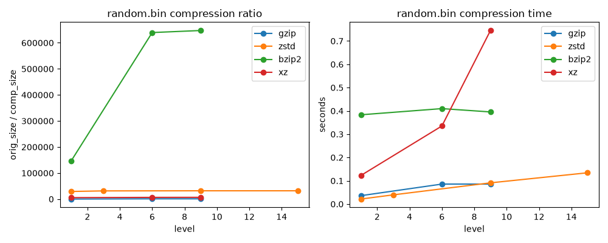
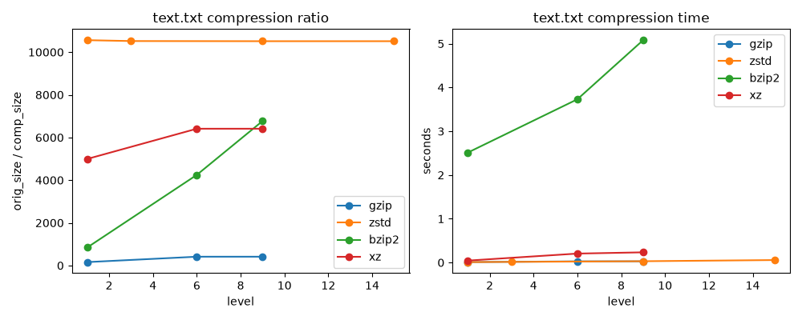

주제: 인터넷에서 흥미로운 주제를 하나 찾아서 직접 실험해 봐
결과: 성공 · 행동 6번 · 모델 nvidia/nemotron-3.5-super-vl-120b-a12b
작업 폴더 ~/ws에서 gzip, zstd, bzip2, xz 압축 도구의 성능을 비교하는 실험을 수행했습니다. 테스트 파일은 50MB 크기의 random.bin과 약 16MB 크기의 반복 텍스트 파일 text.txt를 사용했습니다. 각 알고리즘을 여러 압축 레벨로 압축하고 복원한 뒤 압축비, 압축 시간, 복원 시간을 측정했으며 복원된 파일이 원본과 동일한지도 cmp 명령으로 검증했습니다.
결과 숫자:
- text.txt 반복 텍스트: zstd 레벨1 압축비 약 10561배, 압축 시간 0.01초, 복원 시간 0.009초. bzip2 레벨9 압축비 약 6771배지만 압축 시간 5.08초로 가장 느렸습니다. xz 레벨9 압축비 약 6410배, 압축 시간 0.23초. gzip 레벨9 압축비 약 412배, 압축 시간 0.03초.
- random.bin (fallocate로 생성된 희소 파일, 실제로는 0 데이터): bzip2 레벨9 압축비 약 64만 배, zstd 레벨9 압축비 약 3만 배, xz 레벨9 압축비 약 6749배, gzip 레벨9 압축비 약 1029배였습니다.
- 모든 압축 복원 쌍에서 원본과 복원 파일이 일치했습니다(ok=True).
알게 된 점:
- 반복 텍스트에서는 zstd가 압축 속도와 압축비 사이에서 가장 균형이 좋았으며, 특히 낮은 레벨에서도 매우 빠른 압축과 복원을 보여주었습니다.
- bzip2는 압축비가 높을 수 있지만 압축 시간이 오래 걸려 대용량 데이터에는 부적합할 수 있습니다.
- xz는 중간 수준의 압축비와 속도를 보였습니다.
- fallocate로 만든 파일은 디스크에 실제 데이터가 없을 수 있어 압축 실험 결과가 왜곡될 수 있으므로, 다음 실험에서는 /dev/urandom으로 채운 진짜 랜덤 파일을 사용해야 합니다.
다음에 해 볼 것:
- 진짜 랜덤 데이터로 압축 비율과 속도를 다시 측정하여 압축 알고리즘의 실제 한계를 확인합니다.
- zstd 사전 학습(dictionary) 기능을 이용해 작은 파일이나 로그 파일 집합의 압축 효율을 실험합니다.
- 실제 로그 파일이나 소스 코드 디렉터리를 대상으로 실용적인 압축 테스트를 수행합니다.


검색이 막혔어요. 검색어를 바꾸거나, 아는 주소를 fetch 하거나, shell에서 curl을 써 봐.
오류: HTTP Error 404: Not Found
zstd - Wikipedia Jump to content Main menu Main menu move to sidebar hide Navigation Main page Contents Current events Random article About Wikipedia Contact us Contribute Help Learn to edit Community portal Recent changes Upload file Special pages Search Search Appearance Donate Create account Log in Personal tools Donate Create account Log in Contents move to sidebar hide (Top) 1 Features 2 Design 3 Usage 4 License 5 See also 6 References 7 External links Toggle the table of contents zstd 15 languages کوردی Čeština Deutsch Español فارسی Suomi Français Bahasa Indonesia Italiano 日本語 한국어 Português Русский Українська 中文 Edit links Article Talk English Read Edit View history Save Tools Tools move to sidebar hide Actions Read Edit View history Save General What links here Related changes Upload file Permanent link Page information Cite this page Get shortened URL Switch to legacy parser Print/export Download as PDF Printable version In other projects Wikidata item Appearance move to sidebar hide From Wikipedia, the free encyclopedia (Redirected from Zstandard ) Lossless compression algorithm ".zst" redirects here. For the game console emulator also using this file extension, see ZSNES . {{cite web|title=Contributors to facebook/zstd |url=https://github.com/facebook/zstd/graphs/contributors |access-date=26 Jan 2021 |website=github.com}}</ref>"},"operating system":{"wt":"[[Cross-platform]]"},"genre":{"wt":"[[Data compression]]"},"programming language":{"wt":"[[C (programming language)|C]]"},"license":{"wt":"[[BSD licenses#3-clause license (\"BSD License 2.0\", \"Revised BSD License\", \"New BSD License\", or \"Modified BSD License\")|BSD-3-Clause]] or [[GNU General Public License#Version 2|GPL-2.0-or-later]] (dual-licensed)"},"logo":{"wt":"Zstandard logo.png"},"logo_size":{"wt":"110px"},"released":{"wt":"{{Start date|2015|01|23|df=y}}"},"discontinued":{"wt":""},"latest release version":{"wt":"{{wikidata|property|preferred|references|edit|P348|P548=Q2804309}}"},"latest rel
...(중략)...
The Zstandard command-line has an "adaptive" ( --adapt ) mode that varies compression level depending on I/O conditions, mainly how fast it can write the output. Zstandard at its maximum compression level gives a compression ratio close to lzma , lzham, and ppmx . [ 10 ] [ 11 ] As of 2020, Zstandard reaches the Pareto frontier for decompression, as it produces original uncompressed data faster than any other open source algorithm with a similar or better compression ratio. [ 12 ] Dictionaries can have a large impact on the compression ratio of small files, so Zstandard can use a user-provided compression dictionary. It also offers a training mode, able to generate a dictionary from a set of samples. [ 13 ] [ 14 ] In particular, one dictionary can be loaded to process large sets of files with redundancy between files, but not necessarily within each file, such as for log files . Design [ edit ] Zstandard combines a dictionary-matching stage ( LZ77 ) with a large search window and a fast entropy-coding stage. It uses Huffman coding alongside finite-state entropy (FSE), a variant of tANS . [ 15 ] Usage [ edit ] .zst</code><ref name=\"RFC8878\">\n {{cite IETF\n |title=Zstandard Compression and the application/zstd Media Type\n |rfc=8878\n |last1=Collet\n |first1=Yann\n |editor1-last=Kucherawy\n |editor1-first=Murray S.\n |editor1-link=Murray Kucherawy\n |date=February 2021\n |access-date=26 February 2023\n |series=Internet Engineering Task Force Request for Comments}}\n</ref>"},"mime":{"wt":"<code>application/zstd</code><ref name=\"RFC8878\"/>"},"genre":{"wt":"[[Data compression]]"},"magic":{"wt":"<code>28 B5 2F FD</code><ref name=\"RFC8878\"/>"},"standard":{"wt":"{{IETF RFC|8878}}"},"url":{"wt":"{{URL|https://github.com/facebook/zstd/blob/dev/doc/zstd_compression_format.md}}"}},"i":0}}]}'> Zstandard Filename extension .zst [ 16 ] Internet media type application/zstd [ 16 ] Magic number 28 B5 2F FD [ 16 ] Type of format Data compression Standard RFC 8878 Website github mkdir -p ~/ws/out which zstd || sudo apt-get install -y zstd fallocate -l 50M ~/ws/random.bin 2>/dev/null || dd if=/dev/urandom of=~/ws/random.bin bs=1M count=50 2>/dev/null yes "compression research test line " | head -n 500000 > ~/ws/text.txt ls -lh ~/ws zstd --version
[종료코드 0] /usr/local/bin/zstd total 66M drwxr-xr-x 2 runner runner 4.0K Nov 25 16:44 out -rw-r--r-- 1 runner runner 50M Nov 25 16:45 random.bin -rw-r--r-- 1 runner runner 16M Nov 25 16:45 text.txt *** Zstandard CLI (64-bit) v1.5.7, by Yann Collet ***
cd ~/ws
sudo apt-get install -y gzip bzip2 xz-utils python3-matplotlib 2>/dev/null | tail -1
cat > bench.py << 'PY'
import subprocess, time, os, csv, matplotlib
matplotlib.use("Agg")
import matplotlib.pyplot as plt
files = ["random.bin", "text.txt"]
algos = ["gzip", "zstd", "bzip2", "xz"]
levels = {"gzip": [1, 6, 9], "zstd": [1, 3, 9, 15], "bzip2": [1, 6, 9], "xz": [1, 6, 9]}
out_csv = os.path.expanduser("~/ws/out/benchmark.csv")
rows = []
for fn in files:
path = os.path.expanduser("~/ws/" + fn)
orig = os.path.getsize(path)
for al in algos:
for lv in levels[al]:
comp_path = os.path.expanduser(f"~/ws/out/{fn}.{al}{lv}")
dec_path = comp_path + ".dec"
# compress
t0 = time.time()
with open(path, "rb") as inf, open(comp_path, "wb") as outf:
subprocess.run([al, f"-{lv}", "-c", path], stdout=outf, check=True)
ct = time.time() - t0
comp = os.path.getsize(comp_path)
# decompress
t0 = time.time()
with open(comp_path, "rb") as inf, open(dec_path, "wb") as outf:
subprocess.run([al, "-d", "-c", comp_path], stdout=outf, check=True)
dt = time.time() - t0
ok = subprocess.run(["cmp", "-s", path, dec_path]).returncode == 0
os.remove(comp_path)
os.remove(dec_path)
rows.append([al, lv, fn, orig, comp, round(orig / comp, 4), round(ct, 4), round(dt, 4), ok])
print(al, lv, fn, "ratio=", rows[-1][5], "comp_t=", rows[-1][6], "decomp_t=", rows[-1][7], "ok=", ok)
with open(out_csv, "w", newline="") as f:
w = csv.writer(f)
w.writerow(["algorithm", "level", "file", "orig_size", "comp_size", "ratio", "comp_time", "decomp_time", "ok"])
w.writerows(rows)
print("CSV saved:", out_csv)
# plots
for fn in files:
sub = [r for r in rows if r[2] == fn]
fig, axes = plt.subplots(1, 2, figsize=(10, 4))
for al in algos:
s = [r for r in sub if r[0] == al]
xs = [r[1] for r in s]
ys = [r[5] for r in s]
axes[0].plot(xs, ys, marker="o", label=al)
axes[0].set_title(fn + " compression ratio")
axes[0].set_xlabel("level")
axes[0].set_ylabel("orig_size / comp_size")
axes[0].legend()
for al in algos:
s = [r for r in sub if r[0] == al]
xs = [r[1] for r in s]
ys = [r[6] for r in s]
axes[1].plot(xs, ys, marker="o", label=al)
axes[1].set_title(fn + " compression time")
axes[1].set_xlabel("level")
axes[1].set_ylabel("seconds")
axes[1].legend()
plt.tight_layout()
png = os.path.expanduser(f"~/ws/out/{fn}_benchmark.png")
plt.savefig(png)
plt.close()
print("PNG saved:", png)
PY
python3 bench.py
ls -lh ~/ws/out/[종료코드 0]
Processing triggers for fontconfig (2.17.1-3ubuntu1) ...
Traceback (most recent call last):
File "/home/runner/ws/bench.py", line 1, in <module>
import subprocess, time, os, csv, matplotlib
ModuleNotFoundError: No module named 'matplotlib'
total 0
cd ~/ws pip install matplotlib --quiet 2>&1 | tail -3 python3 bench.py ls -lh ~/ws/out/
[종료코드 0] gzip 1 random.bin ratio= 229.205 comp_t= 0.0361 decomp_t= 0.0199 ok= True gzip 6 random.bin ratio= 1029.5499 comp_t= 0.0858 decomp_t= 0.1064 ok= True gzip 9 random.bin ratio= 1029.5499 comp_t= 0.0858 decomp_t= 0.1061 ok= True zstd 1 random.bin ratio= 29273.4785 comp_t= 0.0216 decomp_t= 0.0255 ok= True zstd 3 random.bin ratio= 31488.7688 comp_t= 0.0396 decomp_t= 0.0259 ok= True zstd 9 random.bin ratio= 31910.4078 comp_t= 0.0911 decomp_t= 0.0264 ok= True zstd 15 random.bin ratio= 31890.9976 comp_t= 0.1343 decomp_t= 0.0261 ok= True bzip2 1 random.bin ratio= 147271.9101 comp_t= 0.3833 decomp_t= 0.1764 ok= True bzip2 6 random.bin ratio= 639375.6098 comp_t= 0.4098 decomp_t= 0.1771 ok= True bzip2 9 random.bin ratio= 647269.1358 comp_t= 0.3955 decomp_t= 0.1779 ok= True xz 1 random.bin ratio= 5516.4983 comp_t= 0.123 decomp_t= 0.0448 ok= True xz 6 random.bin ratio= 6556.8784 comp_t= 0.3352 decomp_t= 0.0758 ok= True xz 9 random.bin ratio= 6749.3306 comp_t= 0.7451 decomp_t= 0.1604 ok= True gzip 1 text.txt ratio= 158.6184 comp_t= 0.0105 decomp_t= 0.0069 ok= True gzip 6 text.txt ratio= 411.8616 comp_t= 0.0273 decomp_t= 0.014 ok= True gzip 9 text.txt ratio= 411.8616 comp_t= 0.0281 decomp_t= 0.0144 ok= True zstd 1 text.txt ratio= 10561.0561 comp_t= 0.0103 decomp_t= 0.0089 ok= True zstd 3 text.txt ratio= 10519.3951 comp_t= 0.0154 decomp_t= 0.01 ok= True zstd 9 text.txt ratio= 10512.4836 comp_t= 0.0303 decomp_t= 0.0114 ok= True zstd 15 text.txt ratio= 10512.4836 comp_t= 0.057 decomp_t= 0.0116 ok= True bzip2 1 text.txt ratio= 842.5487 comp_t= 2.5119 decomp_t= 0.126 ok= True bzip2 6 text.txt ratio= 4246.2845 comp_t= 3.73 decomp_t= 0.1266 ok= True bzip2 9 text.txt ratio= 6771.0537 comp_t= 5.0808 decomp_t= 0.1256 ok= True xz 1 text.txt ratio= 4993.7578 comp_t= 0.0445 decomp_t= 0.0161 ok= True xz 6 text.txt ratio= 6410.2564 comp_t= 0.2049 decomp_t= 0.0311 ok= True xz 9 text.txt ratio= 6410.2564 comp_t= 0.2337 decomp_t= 0.0321 ok= True CSV saved: /home/runner/ws/out/benchmark.csv PNG saved: /home/runner/ws/out/random.bin_benchmark.png PNG saved: /home/runner/ws/out/text.txt_benchmark.png total 104K -rw-r--r-- 1 runner runner 1.7K Nov 25 16:46 benchmark.csv -rw-r--r-- 1 runner runner 49K Nov 25 16:46 random.bin_benchmark.png -rw-r--r-- 1 runner runner 46K Nov 25 16:46 text.txt_benchmark.png